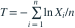
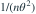

在密度  （
（ ）下，令
）下，令
（）下，令 
。以下哪项正确？- AT 虽然相合，但不可能无偏
- BT 是
 的无偏有效估计，其方差为
的无偏有效估计，其方差为 
- CT 是
 的无偏有效估计
的无偏有效估计 - DT 的方差为
 ，因而达到估计 的下界
，因而达到估计 的下界
我已思考，展开答案与解析
正确答案：B
- 令 ，则 ，故 W 服从速率为 的指数分布。
- 于是 、。
- 对
 ，C-R 下界为 ，与 T 的方差相等。
，C-R 下界为 ，与 T 的方差相等。
易错提醒参数函数的 C-R 下界须包含导数的平方。
南审 813 · 2025 · 二·2(2)，PDF第1页
从大题拆分考点并重新编写选项；数值或设问有调整。
查看参考来源